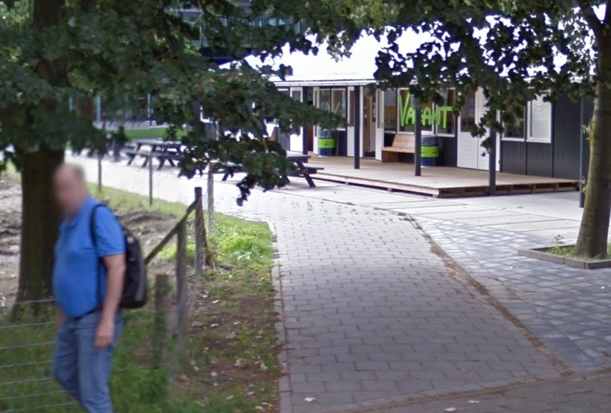
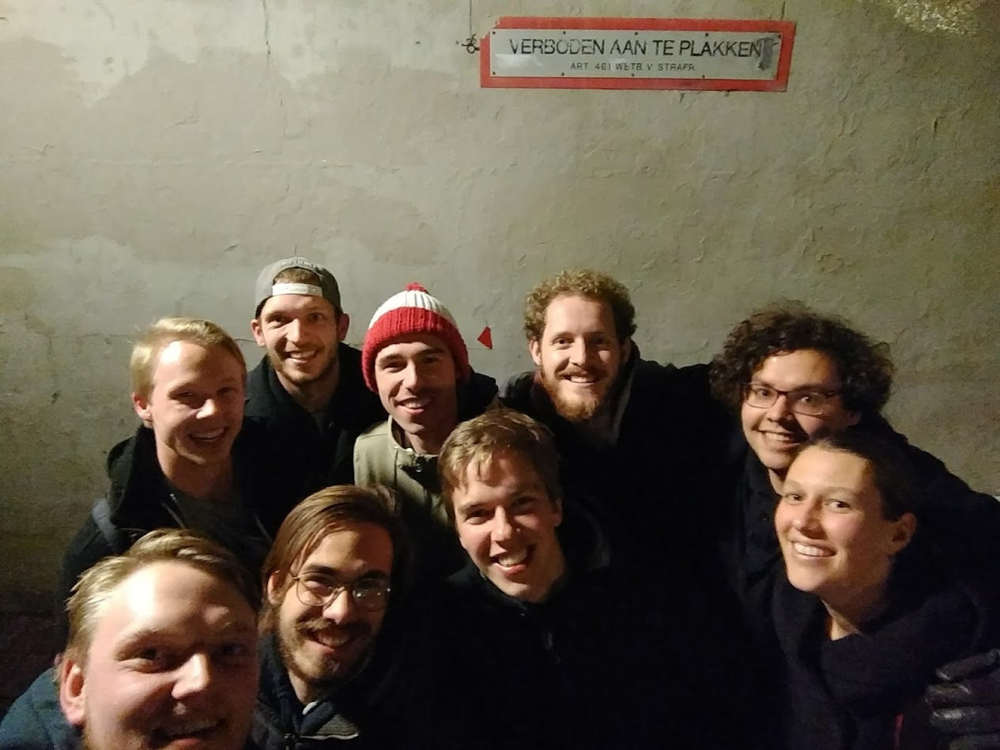

Algemene informatie
Op 2 juni 2018 organiseert U.S.C.K.I. Incognito, vijf jaar na de vorige, weer een reünie!
Na het succes van vijf jaar geleden organiseert de Aluminium dit jaar weer een Incognito-reünie. Deze dag zal in het teken staan van het ophalen van oude herinneringen en bijkletsen met oude bekenden, maar ook van het vergelijken van het werkveld en het Incognito van toen en nu.
| Wanneer | 2 juni 2018, vanaf 13:00 |
| Waar | De Vagant |
| Hoeveel | ~ €25,- |
| Wat | Drankjes, diner, pubquiz |
| Facebook? | Hier is een event te vinden waar je al je vriendjes voor uit mag nodigen! |
Openbaar vervoer
Vanaf Utrecht Centraal kan bus 28 tot halte "Botanische tuinen" genomen worden.
Auto A28
Vanaf de A28 neem je de afslag "De Uithof/De Bilt". Je slaat bij de stoplichten links af en volgt de weg door twee bochten. Vervolgens sla je rechtsaf de Leuvenlaan op. Aan je rechterhand zie je na zo'n 500m de Vagant.
Auto A27
Vanaf de A27 volg je bordjes "De Uithof" en neem je afslag 2 naar "De Uithof". Je slaat bij de stoplichten links af en je volgt de weg door twee bochten. Vervolgens sla je rechtsaf de Leuvenlaan op. Aan je rechterhand zie je na zo'n 500m de Vagant.
Parkeerplekken
Parkeerplekken zijn beschikbaar op parkeerterrein Padualaan, waar de Vagant zich zo'n 2 minuten lopen van bevindt.
De Vagant
De Vagant is een laag gebouwtje naast het nieuwe Koningsbergergebouw op de Uithof. In Figuur 1 is de Vagant te zien op een gemiddelde lentedag, waarop een zwak zonnetje scheen. Programma (onder voorbehoud)
Het programma zal bestaan uit een combinatie van korte praatjes, zoals over de huidige staat van Kunstmatige Intelligentie, maar natuurlijk ook over Incognito van toen en nu.
Uiteraard zal er ook genoeg tijd zijn om rustig bij te kletsen.
| Tijd | Activiteit |
|---|---|
| 13:00 | Inloop |
| 14:00 | Praatje Albert Visser |
| 14:30 | Tijdlijn door Incognito part 1 |
| 15:00 | Pauze, koffie e.d. |
| 16:00 | Tijdlijn door Incognito part 2 |
| 16:30 | De huidige staat van KI door Benno Kruit |
| 17:00 | Pauze |
| 18:00 | Diner |
| 19:30 | (Optionele) Pubquiz |
| 20:30 | Borrel |
Inschrijven
Lekker gescrolld?|
ContactVoor vragen, extra informatie of opmerkingen kan altijd gemaild worden naar commissievoorzitter Kevin of natuurlijk de gehele commissie.Voor dringende vragen kan Kevin natuurlijk ook gebeld worden! |

|
aluminium@uscki.nl